공인중개사-2차 (2008-10-26 기출문제)
1과목: 임의구분
1. 공인중개사법령의 내용에 관한 설명으로 틀린 것은?(다툼이 있으면 판례에 의함)
- 공인중개사자격시험 합격자에 대한 자격증의 교부는 시ㆍ도지사가 한다.
- 반복ㆍ계속성이나 영업성이 없이 우연한 기회에 타인간의 거래행위를 중개한 경우는 중개업에 해당하지 않는다.
- 중개대상물 중 ‘건축물’에는 장차 건축될 특정의 건물도 포함된다.
- 영업상의 노하우 등 무형의 재산적 가치는 중개대상물이 아니다.
- 중개행위인지의 여부는 중개업자가 진정으로 거래당사자를 위하여 거래를 알선ㆍ중개하려는 의사를 갖고 있었는가를 기준으로 판단한다.
(정답률: 59%)

2. 공인중개사 자격취득자 중 중개사무소의 개설등록을 할 수 없는 자는?
- 한정치산선고를 받지 아니한 사실상 한정치산상태에 있는 자
- 파산선고를 받고 복권된 자
- 중개사무소 개설등록이 취소된 후 3년이 경과된 자
- 도로교통법 위반으로 벌금형을 받은 자
- 금고 이상의 형의 집행유예를 받고 그 유예기간 중에 있는 자
(정답률: 46%)
3. 공인중개사법령에 관한 설명으로 옳은 것을 모두 고른 것은?(다툼이 있으면 판례에 의함)
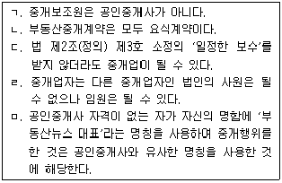
- ㄱ, ㄴ
- ㄱ, ㅁ
- ㄴ, ㄷ, ㄹ
- ㄴ, ㄹ, ㅁ
- ㄱ, ㄷ, ㅁ
(정답률: 알수없음)
4. 공인중개사법령상 중개업자의 중개대상이 될 수 있는 권리 및 대상물로 틀린 항목이 들어 있는 것을 모두 고른 것은?(문제 오류로 인하여 실제 시험에서는 모두 정답 처리 되었습니다. 여기서는 1번을 누르면 정답 처리 됩니다.)
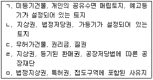
- ㄱ, ㄴ, ㄷ
- ㄱ, ㄷ, ㄹ
- ㄴ, ㄷ, ㅁ
- ㄴ, ㄹ, ㅁ
- ㄷ, ㄹ, ㅁ
(정답률: 55%)
5. 중개업자의 의무 및 금지행위에 관한 내용으로 틀린 것은?(다툼이 있으면 판례에 의함)
- 중개업자 등이 업무상 알게 된 비밀을 누설한 경우 피해자의 명시한 의사에 반하여 벌하지 아니한다.
- 중개업자는 법령상의 중개대상물의 매매를 업으로 하는 행위를 하여서는 아니된다.
- 중개업자가 미등기전매를 알선하였으나 중개의뢰인이 이로 인하여 전매차익을 얻지 못한 경우라면 법 제33조(금지행위) 제7호의 ‘부동산투기를 조장하는 행위’에 해당하지 않는다.
- 중개업자는 직접적인 위탁관계가 없더라도 그의 개입을 신뢰하여 거래하게 된 거래상대방에 대하여 목적물의 하자, 권리자의 진위 등에 대한 일반적인 주의의무를 부담한다.
- 중개업자는 업무상 알게 된 비밀을 누설하여서는 아니되나, 중개대상물의 중대한 하자는 중개의뢰인과의 관계에서는 비밀에 해당하지 않는다.
(정답률: 40%)
6. 부동산거래신고에 관한 내용으로 틀린 것은?
- 주택거래신고지역 외의 지역에서 중개업자가 거래계약서를 작성ㆍ교부한 때에는 중개업자가 신고를 하여야 한다.
- 부동산거래신고를 받은 시장ㆍ군수 또는 구청장은 그 신고내용을 확인한 후 신고필증을 신고인에게 7일 이내에 교부하여야 한다.
- 거래당사자는 중개업자로 하여금 거짓된 내용을 신고하도록 요구하여서는 아니된다.
- 거래대상 부동산의 종류 및 계약대상 면적은 신고사항이다.
- 세무관서의 장은 시장ㆍ군수 또는 구청장으로부터 통보받은 신고사항을 국세 또는 지방세 부과를 위한 과세자료로 활용할 수 있다.
(정답률: 알수없음)
7. 공인중개사법령상 손해배상책임의 보장에 관한 설명으로 틀린 것은?(다툼이 있으면 판례에 의함)
- 공탁으로 업무보증을 하는 경우 중개업자가 폐업 또는 사망한 날부터 3년 이내에는 공탁금을 회수하지 못한다.
- 중개업자가 자기의 중개사무소를 다른 사람의 중개행위의 장소로 제공해 거래당사자에게 재산상의 손해를 발생하게 한 때에는 그 손해를 배상할 책임이 있다.
- 공제제도는 중개업자가 그의 불법행위 또는 채무불이행으로 인하여 거래당사자에게 부담하게 되는 손해배상책임을 보증하는 보증보험적 성격을 가진 제도이다.
- 지역농업협동조합이 부동산중개업을 하는 때에는 1천만원 이상의 보증을 설정해야 한다.
- 확인ㆍ설명의무를 위반하여 중개업자가 중개의뢰인에게 손해를 끼친 경우 중개의뢰인이 중개업자에게 소정의 수수료를 지급하지 않았다면 중개업자는 그에 따른 책임을 지지 않는다.
(정답률: 50%)
8. 공인중개사법령상 계약금 등의 반환채무이행의 보장에 관한 설명으로 틀린 것은?
- 예치대상 ‘계약금 등’에는 계약금, 중도금 또는 잔금이 있다.
- 계약금 등을 중개업자 명의로 금융기관 등에 예치하는 경우 중개업자는 거래당사자의 동의 없이 이를 인출할 수 있다.
- 거래당사자는 반환채무이행의 보장을 위해 계약금 등을 반드시 금융기관 등에 예치해야 하는 것은 아니다.
- 중개업자의 명의로 계약금 등을 예치시 예치되는 계약금 등의 안전을 보장하기 위한 규정을 위반한 경우 업무정지 1월을 명할 수 있다.
- 거래당사자간 계약이행기간 동안의 거래안전을 보장하기 위한 제도이다.
(정답률: 알수없음)
9. 공인중개사법령상 중개수수료에 관한 판례의 입장이 아닌 것은?
- 법령상 상한을 초과하는 부동산중개수수료 약정은 그 한도를 넘는 범위 내에서 무효이다.
- 법령상 한도를 초과하는 수수료를 유효한 당좌수표로 받았으나 부도처리되어 중개업자가 그 수표를 반환한 경우에도 이는 위법하다.
- 권리금은 법령상의 중개대상물이 아니므로 중개수수료에 관한 규정이 적용되지 않는다.
- 중개사무소를 개설등록하지 아니하고 부동산거래를 중개하면서 그에 대한 수수료를 약속ㆍ요구하는데 그친 행위는 처벌할 수 없다.
- 중개업자가 중개수수료 산정에 관한 지방자치단체의 조례를 잘못 해석하여 법령이 허용하는 금액을 초과한 중개수수료를 받은 경우 처벌대상이 되지 않는다.
(정답률: 알수없음)
10. 공인중개사법령상 중개업자의 금지행위에 해당되지 않는 것은?
- 아파트를 분양받으려는 자에게 청약통장의 거래를 알선했다.
- 부동산매매를 중개한 중개업자가 당해 부동산을 다른 중개업자의 중개를 통하여 임차했다.
- 주택임대차계약에서 임대의뢰인과 임차의뢰인을 대리해 계약을 체결했다.
- 소유권이전등기가 불가능한 토지를 매수중개의뢰인에게 근저당설정으로 소유권을 확보할 수 있다며 거래를 성사시켰다.
- 무등록중개업자인 것을 알면서 그를 통해 중개를 의뢰받았다.
(정답률: 50%)
11. 공인중개사의 자격취소 사유가 아닌 것은?
- 자격정지처분을 받고 그 자격정지기간 중에 다른 중개업자의 소속공인중개사로 중개업무를 행한 경우
- 부정한 방법으로 공인중개사자격을 취득한 경우
- 공인중개사자격증을 양도 또는 대여한 경우
- 거래계약서에 거래금액 등 거래내용을 거짓으로 기재한 경우
- 공인중개사가 타인에게 자기의 성명을 사용하여 중개업무를 하게 한 경우
(정답률: 알수없음)
12. 공인중개사법령상 절대적 등록취소사유가 아닌 것은?
- 이중으로 중개사무소의 개설등록을 한 경우
- 거짓 그 밖의 부정한 방법으로 중개사무소를 개설등록한 경우
- 등록기준에 미달하게 된 경우
- 중개사무소등록증을 양도 또는 대여한 경우
- 개인인 중개업자가 사망하거나 중개업자인 법인이 해산한 경우
(정답률: 알수없음)
13. 중개수수료 및 실비에 관한 설명으로 옳은 것은?(다툼이 있으면 판례에 의함)
- 동일한 중개대상물에 대하여 동일 당사자간에 매매를 포함한 둘 이상의 거래가 동일 기회에 이루어지는 경우에는 매매계약에 관한 거래금액만을 적용한다.
- 교환계약의 경우에는 교환대상 중개대상물 중 거래금액이 적은 중개대상물의 가액을 거래금액으로 한다.
- 중개업자의 고의 또는 과실로 인하여 중개의뢰인간 거래행위가 해제된 경우에도 중개수수료의 청구권은 인정된다.
- 계약금 등의 반환채무이행 보장에 소요되는 실비의 경우에는 매도ㆍ임대 그 밖의 권리를 이전하고자 하는 중개의뢰인에게 받을 수 있다.
- 일부 중도금만 납부된 분양권을 중개하는 경우 중개수수료는 총 분양가에 프리미엄을 포함한 금액으로 계산한다.
(정답률: 50%)
14. 공인중개사법령 및 공인중개사제도에 관한 설명으로 틀린 것은?
- 부동산중개사무소 개설등록신청서 서식에서 중개업자 종별로는 법인과 공인중개사만이 있다.
- 무등록중개업자의 중개행위로 인한 부동산매매계약이 당연히 무효인 것은 아니다.
- 자격정지 처분을 받은 날부터 6월이 경과한 공인중개사는 법인인 중개업자의 임원이 될 수 있다.
- 법 제39조(업무의 정지) 제1항에 따른 등록관청의 업무정지처분은 해당하는 사유가 발생한 날부터 3년이 경과한 때에는 이를 할 수 없다.
- 자격취소처분을 받은 공인중개사인 중개업자는 그 사무소의 소재지를 관할하는 시ㆍ도지사에게 자격증을 반납해야 한다.
(정답률: 36%)
15. 공인중개사법령상 전속중개계약에 관한 설명으로 옳은 것은?
- 법령은 전속중개계약서에 대한 표준서식을 규정하고 있지 않다.
- 전속중개계약은 당사자 약정으로 유효기간을 정할 수 있기 때문에 법으로 유효기간을 정하지 않고 있다.
- 전속중개계약을 체결한 때에는 부동산거래정보망 또는 일간신문에 당해 중개대상물에 관한 정보를 중개의뢰인이 비공개를 요청하지 않는 한 공개해야 한다.
- 전속중개계약을 체결한 중개업자는 중개의뢰인에게 서면으로 업무처리 상황을 보고할 의무는 없다.
- 전속중개계약을 체결한 때에는 당해 계약서를 5년간 보존하여야 한다는 명문의 규정이 있다.
(정답률: 31%)
16. 공인중개사법령의 내용에 관한 설명으로 옳은 것은?(문제 오류로 인하여 실제 시험에서는 모두 정답 처리 되었습니다. 여기서는 1번을 누르면 정답 처리 됩니다.)
- 휴업기간의 변경신고를 하지 아니한 자의 과태료는 20만원이다.
- 김포시에 주된 사무소가 있는 법인인 중개업자 甲은 공주시에 분사무소를 두려면 공주시에 신고를 하여야 한다.
- 중개업자 甲이 임차한 중개사무소를 중개업자 乙이 공동으로 사용하는 경우 등록관청의 공무원은 임대인의 동의여부를 확인하여야 한다.
- 다른 법률의 규정에 따라 중개업을 할 수 있는 법인의 분사무소에는 공인중개사를 책임자로 두어야 한다.
- 외국인은 공인중개사자격을 취득하였더라도 국내에서 중개업 개설등록을 할 수 없다.
(정답률: 80%)
17. 공인중개사법령상 법인인 중개업자가 할 수 있는 업무를 모두 고른 것은?
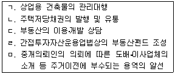
- ㄱ, ㄴ, ㄷ
- ㄱ, ㄴ, ㄹ
- ㄱ, ㄷ, ㅁ
- ㄴ, ㄷ, ㄹ
- ㄷ, ㄹ, ㅁ
(정답률: 알수없음)
18. 공인중개사법령상 중개업자의 인장등록 및 사용인의 관리에 관한 설명으로 옳은 것은?
- 중개보조원의 해고는 고용계약의 법리에 따르므로 등록관청에 신고하지 않아도 된다.
- 소속공인중개사의 업무상 행위에 대하여 그를 고용한 중개업자는 법적 책임이 없다.
- 중개업자가 소속공인중개사를 고용한 때는 고용일로부터 30일 이내에 등록관청에 신고하여야 한다는 명문의 규정이 있다.
- 소속공인중개사는 중개행위에 사용할 인장을 등록관청에 등록하지 않아도 된다.
- 중개업자는 등록인장을 변경한 경우 변경일로부터 7일 이내에 그 변경된 인장을 등록관청에 등록하여야 한다.
(정답률: 55%)
19. 공인중개사법령상 중개사무소에 관한 설명으로 틀린 것은?
- 중개사무소의 최소면적에 관한 명문의 규정은 없다.
- 중개사무소 안에 실무교육 이수증을 게시해야 한다.
- 법인인 중개업자의 분사무소는 분사무소설치신고필증을 게시해야 한다.
- 소속공인중개사가 있는 경우 소속공인중개사자격증을 게시해야 한다.
- 중개업자가 그 사무소에 설치한 옥외 간판에 중개업자의 성명을 표기하지 않은 경우 등록관청은 그 간판의 철거를 명할 수 있다.
(정답률: 알수없음)
20. 공인중개사법령상 업무정지와 자격정지의 사유가 모두 될 수 있는 것이 아닌 것은?
- 등록하지 아니한 인장을 사용한 경우
- 거래계약서에 서명ㆍ날인하지 아니한 경우
- 중개대상물 확인ㆍ설명서에 서명ㆍ날인하지 아니한 경우
- 업무정지기간 중에 중개업무를 한 경우
- 성실ㆍ정확하게 중개대상물의 확인ㆍ설명을 하지 아니한 경우
(정답률: 알수없음)
21. 공인중개사법령상 행정처분권자의 처분의 내용과 대상이 잘못 연결된 것은?
- 국토해양부장관 - 시정명령 - 협회공제사업
- 시ㆍ군ㆍ구청장 - 업무정지 - 공인중개사인 중개업자
- 시ㆍ도지사 - 등록취소 - 중개법인
- 국토해양부장관 - 지정취소 - 부동산거래정보사업자
- 시ㆍ도지사 - 자격정지 - 소속공인중개사
(정답률: 알수없음)
22. 공인중개사법령상 부동산거래정보망에 관한 설명으로 틀린 것은?
- 부동산거래정보망을 설치ㆍ운영할 자로 지정받으려는 자는 신청서류를 국토해양부장관에게 제출하여야 한다.
- 거래정보사업자지정신청서에 중개업자의 주된 컴퓨터 설비의 내역을 기재해야 한다.
- 부동산거래정보망은 중개업자 상호간 부동산매매 등에 관한 정보의 공개와 유통을 촉진시키려는 제도이다.
- 중개업자가 중개의뢰인과 일반중개계약을 체결한 경우는 부동산거래정보망에 중개대상물에 관한 정보를 공개할 의무에 대한 명문규정은 없다.
- 거래정보사업자가 승인받아야 하는 부동산거래정보망의 이용 및 정보제공방법 등에 관한 운영규정에는 가입자에 대한 회비 및 그 징수에 관한 사항을 정하여야 한다.
(정답률: 37%)
23. 공인중개사법령상 공제사업에 관한 설명으로 틀린 것은?
- 협회가 공제규정을 변경하고자 하는 때에는 금융감독원장의 승인을 얻어야 한다.
- 공제계약의 내용에서 정한 공제료는 공제사고 발생률, 보증보험료 등을 종합적으로 고려하여 결정한 금액으로 한다.
- 협회는 공제사업을 다른 회계와 구분하여 별도의 회계로 관리하여야 한다.
- 회계기준은 공제사업을 손해배상기금과 복지기금으로 구분하여 각 기금별 목적 및 회계원칙에 부합되는 세부기준을 정한다.
- 책임준비금의 적립비율은 공제사고 발생률 및 공제금 지급액 등을 종합적으로 고려하여 정하되, 공제료 수입액의 100분의 10이상으로 정한다.
(정답률: 알수없음)
24. 공인중개사법령상 포상금에 관한 설명으로 옳은 것은?
- 거짓으로 중개사무소의 개설등록을 한 자를 신고한 자는 포상금 지급대상이 될 수 없다.
- 포상금은 1건당 30만원으로 한다.
- 등록관청은 공인중개사자격증의 양도ㆍ대여를 사유로 포상금을 지급한 경우 자격증을 교부한 시ㆍ도에 그 사실을 통보하여야 한다.
- 폐업 후 중개업을 한 자를 신고한 자는 포상금 지급대상이 된다.
- 등록관청은 하나의 사건에 대하여 2건 이상의 신고가 접수된 경우에는 신고자에게 포상금을 균등하게 배분하여 지급한다.
(정답률: 알수없음)
25. 공인중개사법령상 3년 이하의 징역 또는 2천만원 이하의 벌금에 처해지는 것으로 옳게 짝지어진 것은?
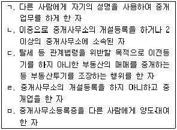
- ㄱ, ㄴ
- ㄱ, ㅁ
- ㄴ, ㄹ
- ㄷ, ㄹ
- ㄷ, ㅁ
(정답률: 알수없음)
26. 공인중개사법령상 부동산매매계약에 관하여 신고해야 할 사항으로 틀린 것은?
- 매수인 및 매도인의 인적사항
- 계약의 조건이나 기한이 있는 경우에는 그 조건 또는 기한
- 거래대상 부동산의 소재지 지번 및 지목
- 거래대상 부동산의 권리관계
- 실제 거래가격
(정답률: 10%)
27. 공인중개사법령상 당해 지방자치단체의 조례가 정하는 바에 따라 수수료를 납부하여야 하는 것으로 옳게 짝지어진 것은?
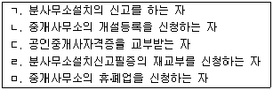
- ㄱ, ㄴ, ㄹ
- ㄱ, ㄴ, ㅁ
- ㄱ, ㄷ, ㄹ
- ㄴ, ㄷ, ㅁ
- ㄷ, ㄹ, ㅁ
(정답률: 알수없음)
28. 공인중개사법령상 협회에 관한 설명으로 틀린 것은?
- 협회는 법인으로 한다.
- 협회는 총회의 의결내용을 지체 없이 국토해양부장관에게 보고하여야 한다.
- 협회가 그 지부 또는 지회를 설치한 때에는 그 지부는 국토해양부장관에게, 지회는 시ㆍ도지사에게 신고하여야 한다.
- 협회는 회원 300인 이상이 발기인이 되어 정관을 작성하여 창립총회의 의결을 거친 후 국토해양부장관의 인가를 받아 그 주된 사무소의 소재지에서 설립등기를 함으로써 성립한다.
- 협회를 설립하고자 하는 때에는 발기인이 작성하여 서명ㆍ날인한 정관에 대하여 회원 600인 이상이 출석한 창립총회에서 출석한 회원 과반수의 동의를 얻어야 한다.
(정답률: 알수없음)
29. 중개업자가 중개의뢰인에게 설명한 내용으로 틀린 것은?(다툼이 있으면 판례에 의함)
- 甲ㆍ乙ㆍ丙 사이에 순차로 매매계약이 체결되었는데 등기는 최초양도인 甲으로부터 최종양수인 丙앞으로 경료하기로 하는 3자간의 합의가 있는 경우, 丙은 직접 甲에 대하여 이전등기를 청구할 수 있다.
- 甲소유의 대지 위에 乙이 무단으로 건물을 신축하였더라도 그 건물의 소유권은 乙에게 속한다.
- 당사자가 설정행위로 금지하지 아니한 경우에는 전세권의 양도에 전세권 설정자의 동의를 요하지 않는다.
- 분묘가 일시적으로나마 멸실되었다면 유골의 존재를 불문하고 분묘기지권은 소멸한다.
- 매수인이 착오로 인접 토지의 일부를 그의 토지에 속하는 것으로 믿고 점유하고 있다면, 그 점유방법이 분묘를 설치ㆍ관리하는 것이어도 자주점유에 해당한다.
(정답률: 50%)
30. 공인중개사법령상 토지중개가 완성되기 전 중개대상물 확인ㆍ설명서에 세율을 기재하여야 하는 조세로 틀린 것은?
- 취득세
- 등록세
- 농어촌특별세
- 지방교육세
- 재산세
(정답률: 31%)
31. 공인중개사법령에 관한 내용으로 틀린 것은?(다툼이 있으면 판례에 의함)
- 중개대상물의 가격이 당해 거래상의 중요사항으로 볼 수 있는 이상 법 제33조(금지행위) 제4호의 ‘당해 중개대상물의 거래상의 중요사항’에 포함된다.
- 중개업자는 매도의뢰인이 진정한 권리자와 동일인인지의 여부를 알지 못하는 경우 필요할 때에는 부동산등기부와 주민등록증에 의하여 이를 조사ㆍ확인하는 것으로 족하다.
- 분양대행과 관련하여 교부받은 금원은 법 제33조 제3호에 의하여 초과수수가 금지되는 금품이 아니다.
- 중개대상물인 주택의 소재지와 중개사무소의 소재지가 다른 경우 중개업자는 중개사무소의 소재지를 관할하는 시ㆍ도의 조례에서 정한 기준에 따라 수수료를 받아야 한다.
- 공인중개사 자격이 없는 자가 거래를 성사시켜 작성한 계약서에 공인중개사인 중개업자가 자신의 인감을 날인하는 방법은 공인중개사자격증의 대여행위에 해당한다.
(정답률: 알수없음)
32. 주택임대차에 관한 중개업자의 설명으로 옳은 것은?(다툼이 있으면 판례에 의함)
- 차임 등의 증액청구에 대한 제한규정은 임대차계약이 종료된 후 재계약을 하는 경우에도 적용된다.
- 자연인인 임차인에 한하여 주택임대차보호법에 의한 보호를 받는다.
- 임차권등기명령에 의한 임차권등기가 첫 경매개시결정등기 전에 이루어진 경우, 임차인은 별도의 배당요구를 하지 않아도 당연히 배당받을 채권자에 속한다.
- 임대인이 계약해제로 인하여 주택의 소유권을 상실하게 되었다면, 임차인이 그 계약이 해제되기 전에 대항력을 갖춘 경우에도 새로운 소유자에게 대항할 수 없다.
- 일시사용을 위한 임대차임이 명백한 경우에도 주택임대차보호법이 적용된다.
(정답률: 알수없음)
33. 공인중개사의 매수신청대리인 등록 등에 관한 규칙상의 매수신청대리인에 관한 설명으로 틀린 것은?
- 중개업자는 위 규칙에 의한 대리행위를 할 경우에는 매각장소 또는 집행법원에 직접 출석해야 한다.
- 임대주택법 규정에 따른 임차인의 임대주택 우선매수 신고를 할 수 있다.
- 공인중개사법령상 실무교육을 이수하고 1년이 경과되지 않은 경우 별도의 매수신청대리에 대한 실무교육은 면제된다.
- 민사집행법 규정에 따른 차순위 매수신고를 대리할 수 있다.
- 공장저당법에 따른 공장재단을 매수신청대리 할 수 있다.
(정답률: 40%)
34. 보증금이 1천만원에 월세가 30만원인 주택임대차계약을 체결한 경우 중개업자가 중개의뢰인들로부터 받을 수 있는 중개수수료의 총액은?[단, 계약기간은 2년이고 중개수수료율은 5천만원 미만 5/1000(한도액 20만원), 5천만원 이상 1억원 미만 4/1000(한도액 30만원)임]
- 155,000원
- 200,000원
- 300,000원
- 310,000원
- 400,000원
(정답률: 알수없음)
35. 중개업자가 중개의뢰인에게 설명한 내용으로 틀린 것은?
- 주택법령상 국토해양부장관이 지정한 투기지역에서는 주택에 대한 전매제한이 있다.
- 도시 및 주거환경정비법령상 정비구역 안에서 건축물의 건축행위를 하고자 하는 자는 시장ㆍ군수 또는 자치구의 구청장의 허가를 받아야 한다.
- 건축법령상 다중주택은 용도별 건축물의 종류 중 단독주택에 해당된다.
- 국토의 계획 및 이용에 관한 법령상 시장ㆍ군수 또는 구청장은 토지거래계약 허가를 받은 자가 토지를 허가받은 목적대로 이용하고 있는지의 여부를 국토해양부령이 정하는 바에 따라 조사하여야 한다.
- 동별로 설립된 리모델링주택조합은 리모델링 설계의 개요ㆍ공사비ㆍ조합원의 비용분담내역이 기재된 결의서에 그 동의 구분소유자 및 의결권의 각 5분의 4 이상의 동의를 얻고, 시장ㆍ군수 또는 구청장의 허가를 받아 리모델링을 할 수 있다.
(정답률: 알수없음)
36. 외국인토지법령상 외국인이 토지취득계약 체결 전 관할관청의 허가를 받아야 하는 구역ㆍ지역이 아닌 것만을 고른 것은?
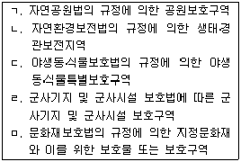
- ㄱ
- ㄱ, ㄴ
- ㄱ, ㄴ, ㄷ
- ㄱ, ㄴ, ㄷ, ㄹ
- ㄱ, ㄴ, ㄷ, ㄹ, ㅁ
(정답률: 30%)
37. 중개업자와 고객과의 상담내용으로 ( )에 알맞은 것은?(순서대로 (ㄱ), (ㄴ))
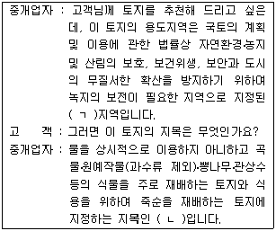
- 보전관리, 답
- 녹지, 전
- 자연환경보전, 과수원
- 생산관리, 전
- 녹지, 과수원
(정답률: 17%)
38. 중개대상물 확인ㆍ설명서의 작성에 관한 설명으로 틀린 것은?
- 주거용 건축물은 단독주택, 공동주택을 구분하여 표시한다.
- 토지의 경우에는 ‘대상물건의 상태에 관한 자료요구 사항’에서 매도(임대)의뢰인에게 요구한 사항 및 그 관련자료의 제출여부를 기재한다.
- 주거용 건축물의 용도지역ㆍ지구는 토지이용계획확인서로 파악하고, 건폐율ㆍ용적률 상한은 시ㆍ군 조례에 따라 기재한다.
- 중개대상물에 근저당이 설정되어 있으면 담보인정비율(LTV) 및 채무보증한도액을 확인하여 기재한다.
- 주거용 건축물에서 도로, 대중교통, 주차장 등의 입지조건과 관리에 관한 사항은 중개업자가 조사하여 기재한다.
(정답률: 39%)
39. 중개업자가 중개의뢰인에게 설명한 내용으로 틀린 것은?(다툼이 있으면 판례에 의함)
- 토지거래허가구역 안에 있는 토지에 대한 매매계약이 확정적으로 무효로 되는데 귀책사유가 있는 당사자는 계약의 무효를 주장할 수 없다.
- 甲 소유의 아파트를 乙이 임차하면서 임대차기간을 1년으로 약정한 경우 乙은 1년의 기간이 유효함을 주장할 수 있다.
- 임차인은 주택임대차보호법에 따른 임차권등기명령에 의한 임차권등기 이후에는 이사를 가더라도 이미 취득한 대항력 및 우선변제권을 상실하지 않는다.
- 공유자간에 합의가 없으면 공유토지에 대하여 3분의 2의 지분을 가진 공유자는 그 토지의 특정부분을 배타적으로 사용할 수 있다.
- 주택임차인이 별도로 전세권설정등기를 마쳤더라도 주택임대차보호법상의 대항요건을 상실하면 이미 취득한 동법상의 대항력을 상실한다.
(정답률: 알수없음)
40. 공인중개사법령상 중개대상물 확인ㆍ설명서에 명시된 기재사항으로 틀린 것은?
- 비주거용 건축물 - 매도인에게 자료를 요구하여 확인할 사항은 벽면 상태, 전기ㆍ소방 등의 시설물
- 토지 - 등기부등본으로 확인한 소유권ㆍ저당권 등의 권리사항
- 토지 - 대상토지 1km이내의 비선호시설 존재유무
- 주거용 건축물 - 건물설계도 확인여부
- 입목ㆍ광업재단ㆍ공장재단 - 재단목록 또는 입목의 생육상태
(정답률: 30%)
2과목: 임의구분
41. 지번에 관한 설명으로 옳은 것은?
- 지번은 아라비아 숫자로 표기하되, 임야대장 및 임야도에 등록하는 토지의 지번은 숫자 앞에 “임”자를 붙인다.
- 지번은 소관청이 지번부여지역별로 남동(南東)에서 북서(北西)로 순차적으로 부여한다.
- 합병의 경우에는 합병대상 지번 중 선순위의 지번을 그 지번으로 하되, 본번으로 된 지번이 있는 때에는 본번 중 최종순위의 지번을 합병후의 지번으로 하는 것을 원칙으로 한다.
- 등록전환의 경우에는 그 지번부여지역 안에서 인접토지의 본번에 부번을 붙여서 지번을 부여하는 것을 원칙으로 한다.
- 소관청은 도시개발사업 시행 등의 사유로 지번에 결번이 생긴 때에는 지체없이 그 사유를 지번대장에 기재하여 영구히 보존하여야 한다.
(정답률: 알수없음)
42. 지목에 관한 설명으로 틀린 것은?
- 1필지가 2 이상의 용도로 활용되는 경우에는 주된 용도에 따라 지목을 설정하여야 한다.
- 토지가 일시적 또는 임시적인 용도로 사용되는 때에는 지목을 변경하지 아니한다.
- 물이 고이거나 상시적으로 물을 저장하고 있는 댐ㆍ소류지ㆍ연못 등의 토지는 지목을 “유지”로 한다.
- 용수 또는 배수를 위하여 일정한 형태를 갖춘 인공적인 수로의 지목은 “하천”으로 한다.
- 국토의 계획 및 이용에 관한 법률 등 관계법령에 의한 택지조성공사가 준공된 토지는 지목을 “대”로 한다.
(정답률: 알수없음)
43. 토지에 대한 지상경계를 새로이 결정하고자 하는 경우의 기준으로 틀린 것은?(단, 지상경계의 구획을 형성하는 구조물 등의 소유자가 다른 경우는 제외)
- 연접되는 토지사이에 고저가 없는 경우에는 그 구조물 등의 중앙
- 연접되는 토지사이에 고저가 있는 경우에는 그 구조물 등의 하단부
- 공유수면매립지의 토지 중 제방 등을 토지에 편입하여 등록하는 경우에는 안쪽 하단부분
- 토지가 해면 또는 수면에 접하는 경우에는 최대만조위 또는 최대만수위가 되는 선
- 도로ㆍ구거 등의 토지에 절토된 부분이 있는 경우에는 그 경사면의 상단부
(정답률: 17%)
44. 다음 지적도면에 표기된 지목의 부호에 관한 설명으로 틀린 것은?
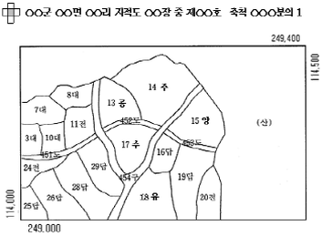
- 지번 13의 지목은 “공원”이다.
- 지번 14의 지목은 “주차장”이다.
- 지번 15의 지목은 “양어장”이다.
- 지번 17의 지목은 “수도용지”이다.
- 지번 18의 지목은 “유지”이다.
(정답률: 20%)
45. 토지의 이동신청 및 지적정리 등에 관한 설명으로 틀린 것은?
- 합병하고자 하는 토지의 소유자별 공유지분이 다르거나 소유자의 주소가 서로 다른 경우 토지소유자는 합병을 신청할 수 없다.
- 소유권이전과 매매 그리고 토지이용상 불합리한 지상경계를 시정하기 위한 경우 토지소유자는 분할을 신청할 수 있다.
- 국토의 계획 및 이용에 관한 법률 등 관계법령에 의한 토지의 형질변경 등의 공사가 준공된 경우 토지소유자는 지목변경을 신청할 수 있다.
- 지적공부의 등록사항이 토지이동정리결의서의 내용과 다르게 정리된 경우 소관청이 직권으로 조사ㆍ측량하여 정정할 수 없다.
- 바다로 되어 등록이 말소된 토지가 지형의 변화 등으로 다시 토지로 된 경우 소관청은 회복등록을 할 수 있다.
(정답률: 46%)
46. 1필지의 토지에 대한 지목과 면적 등이 등록된 것은?
- 일람도
- 토지대장
- 지번색인표
- 대지권등록부
- 공유지연명부
(정답률: 알수없음)
47. 지적공부의 토지소유자 정리 등에 관한 설명으로 틀린 것은?
- 신규등록을 제외한 토지소유자의 변경사항은 등기관서에서 등기한 것을 증명하는 등기필통지서, 등기필증, 등기부등ㆍ초본 또는 등기관서에서 제공한 등기전산정보자료에 의하여 정리한다.
- 국유재산법에 의한 총괄청 또는 관리청이 지적공부에 소유자가 등록되지 아니한 토지에 대하여 소유자등록신청을 하는 경우 소관청은 이를 등록할 수 있다.
- 등기부에 기재된 토지의 표시가 지적공부와 부합하지 아니하는 때에는 지적공부의 토지소유자를 정리할 수 없다. 이 경우 그 뜻을 관할 등기관서에 통지하여야 한다.
- 소관청 소속공무원이 지적공부와 부동산등기부의 부합여부를 확인하기 위하여 등기부를 열람하거나 등기부등ㆍ초본의 교부를 신청하거나 등기전산정보자료의 제공을 요청하는 경우 그 수수료는 무료로 한다.
- 소관청은 토지소유자의 변동 등에 따른 지적공부를 정리하고자 하는 경우에는 토지이동정리결의서를 작성하여야 한다.
(정답률: 알수없음)
48. 축척변경에 관한 설명으로 틀린 것은?
- 청산금의 납부 및 지급이 완료된 때에는 소관청은 지체없이 축척변경의 확정공고를 하여야 하며, 확정공고일에 토지의 이동이 있는 것으로 본다.
- 청산금의 납부고지 또는 수령통지된 청산금에 관하여 이의가 있는 자는 납부고지 또는 수령통지를 받은 날부터 60일 이내에 소관청에 이의신청을 할 수 있다.
- 축척변경시행지역안의 토지소유자 또는 점유자는 시행공고가 있는 날부터 30일 이내에 시행공고일 현재 점유하고 있는 경계에 경계점표지를 설치하여야 한다.
- 소관청은 청산금의 결정을 공고한 날부터 20일 이내에 토지소유자에게 청산금의 납부고지 또는 수령통지를 하여야 한다.
- 청산금의 납부고지를 받은 자는 그 고지를 받은 날부터 3월 이내에 청산금을 소관청에 납부하여야 한다.
(정답률: 알수없음)
49. 소관청이 지적정리로 인한 토지표시의 변경에 관한 등기촉탁을 하여야 할 필요가 있는 경우에 해당되지 않는 것은?
- 공유수면매립법에 의해 준공된 토지를 신규등록한 때
- 토지의 형질변경 등의 공사가 준공되어 지목변경한 때
- 지적공부에 등록된 지번을 변경할 필요가 있어 지번을 새로이 부여한 때
- 행정구역의 개편으로 새로이 지번을 부여한 때
- 바다로 된 토지의 등록을 말소한 때
(정답률: 알수없음)
50. 甲 소유의 토지 300㎡의 일부를 乙에게 매도하기 위하여 분할하고자 하는 경우에 관한 설명으로 틀린 것은?
- 甲이 분할을 위한 측량을 의뢰하고자 하는 경우 지적측량수행자에게 하여야 한다.
- 매도할 토지가 분할허가 대상인 경우에는 甲이 분할사유를 기재한 신청서에 허가서 사본을 첨부하여야 한다.
- 분할측량을 하는 때에는 분할되는 필지마다 면적을 측정하지 않아도 된다.
- 분할에 따른 지상경계는 지상건축물을 걸리게 결정하지 않는 것이 원칙이다.
- 분할측량을 하고자 하는 경우에는 지상경계점에 경계점 표지를 설치한 후 측량할 수 있다.
(정답률: 알수없음)
51. 지적측량에 관한 설명으로 틀린 것은?
- 지적현황측량은 지상건축물 등의 현황을 지적도면에 등록된 경계와 대비하여 표시하기 위해 실시하는 측량을 말한다.
- 지적측량수행자는 지적측량의뢰가 있는 경우 지적측량을 실시하여 그 측량성과를 결정하여야 한다.
- 지적측량수행자가 경계복원측량을 실시한 때에는 시ㆍ도지사 또는 소관청에게 측량성과에 대한 검사를 받아야 한다.
- 지적측량은 기초측량 및 세부측량으로 구분하며, 측판측량ㆍ경위의측량ㆍ전파기 또는 광파기측량ㆍ사진측량 및 위성측량 등의 방법에 의한다.
- 지적측량은 토지를 지적공부에 등록하거나 지적공부에 등록된 경계점을 지상에 복원할 목적으로 소관청 또는 지적측량수행자가 각 필지의 경계 또는 좌표와 면적을 정하는 측량으로 한다.
(정답률: 알수없음)
52. 동(洞)지역의 1필지 토지에 대하여 지적측량기준점을 설치하지 않고 분할측량을 하고자 하는 경우, 지적측량수행자의 측량기간과 소관청의 검사기간으로 옳은 것은?(단, 측량의뢰인과 지적측량수행자가 합의하여 기간을 정한 경우는 제외)
- 측량기간 5일, 검사기간 4일
- 측량기간 6일, 검사기간 4일
- 측량기간 7일, 검사기간 5일
- 측량기간 5일, 검사기간 6일
- 측량기간 6일, 검사기간 5일
(정답률: 10%)
53. 누구든지 필요한 경우 일정 사실에 대한 증명서의 발급을 등기소에 청구할 수 있다. 그 증명서를 발급할 수 없는 것은?(문제 오류로 인하여 실제 시험에서는 2, 5번이 정답 처리 되었습니다. 여기서는 2번을 누르면 정답 처리 됩니다.)
- 어떤 사항에 대한 등기가 없다는 사실
- 어느 부동산이 등기되어 있지 않다는 사실
- 등기사항에 변경이 없다는 사실
- 등기부 초본의 기재사항에 변경이 없다는 사실
- 등기 전산정보처리조직(전산화된 등기부)에 특정지번에 관한 등기전산정보자료가 존재하지 않는다는 사실
(정답률: 알수없음)
54. 예고등기에 관한 설명으로 옳은 것은?
- 예고등기가 있으면 당해 등기가 무효라는 추정이나 권리보전의 효력이 인정된다.
- 불공정한 법률행위를 이유로 소유권이전등기말소의 소가 제기된 경우에는 예고등기를 할 수 없다.
- 진정명의 회복을 원인으로 하는 소유권이전등기절차의 이행을 구하는 소가 제기된 경우에는 예고등기를 하여야 한다.
- 말소촉탁의 사유가 상고심에서 발생한 경우에도 예고등기의 말소촉탁은 제1심 법원이 하여야 한다.
- 부동산에 관한 권리의 일부에 대하여는 예고등기를 할 수 없다.
(정답률: 알수없음)
55. 등기가 가능한 것은?
- 소유권보존등기의 가등기
- 일부 공유지분만에 대한 전세권설정등기
- 건물 소유 목적의 농지에 대한 지상권설정등기
- 농작물 경작 목적의 농지에 대한 전세권설정등기
- 리모델링 공사대금 담보 목적의 건물에 대한 유치권설정등기
(정답률: 알수없음)
56. 가등기에 관한 설명으로 옳은 것만을 묶은 것은?
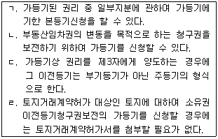
- ㄱ, ㄴ
- ㄱ, ㄷ
- ㄴ, ㄷ
- ㄴ, ㄹ
- ㄷ, ㄹ
(정답률: 10%)
57. 지역권등기에 관한 설명으로 틀린 것은?
- 승역지의 지상권자도 지역권설정자로서 등기의무자가 될 수 있다.
- 승역지의 전세권자가 지역권을 설정해 주는 경우, 그 지역권 설정등기는 전세권등기에 부기등기로 한다.
- 지역권설정등기는 지역권자가 등기권리자, 지역권설정자가 등기의무자로서 공동으로 신청함이 원칙이다.
- 지역권설정등기 신청서에는 부동산의 표시 등 일반적 기재사항 이외에 지역권설정의 목적과 범위를 기재하여야 한다.
- 요역지의 소유권이 이전된 경우, 지역권 이전의 효력이 발생하기 위해서는 원칙적으로 지역권이전등기를 하여야 한다.
(정답률: 알수없음)
58. 농지법상의 농지에 대하여 소유권이전등기를 신청할 때 농지취득자격증명을 첨부할 필요가 없는 경우는?
- 부인이 남편 소유의 농지를 상속받은 경우
- 농지전용허가를 받은 농지를 개인이 매수한 경우
- 영농조합법인이 농지를 매수한 경우
- 개인이 국가로부터 농지를 매수한 경우
- 아들이 아버지로부터 농지를 증여받은 경우
(정답률: 알수없음)
59. 경정등기에 관한 설명으로 옳은 것은?(다툼이 있으면 판례에 의함)
- 소유권이 이전된 후에도 종전 소유권에 대한 등기명의인의 표시경정등기를 할 수 있다.
- 부동산의 표시에 관한 경정등기에서는 등기상 이해관계 있는 제3자의 승낙의 유무가 문제될 여지가 없다.
- 등기사항의 일부가 부적법하게 된 경우에는 일부말소 의미의 경정등기를 할 수 없다.
- 법인 아닌 사단이 법인화된 경우에는 등기명의인을 법인으로 경정하는 등기를 신청할 수 있다.
- 법정상속분에 따라 상속등기를 마친 후에 공동상속인 중 1인에게 재산을 취득케 하는 상속재산분할협의를 한 경우에는 소유권경정등기를 할 수 없다.
(정답률: 알수없음)
60. 임차권등기에 관한 설명으로 옳은 것은?
- 임차권의 이전 및 임차물전대의 등기는 임차권등기에 부기등기의 형식으로 한다.
- 토지의 공중공간이나 지하공간에 상하의 범위를 정하여 구분임차권등기를 할 수 있다.
- 임차권등기명령에 의한 주택임차권등기가 경료된 경우, 그 등기에 기초한 임차권이전등기를 할 수 있다.
- 송전선이 통과하는 선하부지에 대한 임대차의 존속기간을 ‘송전선이 존속하는 기간’으로 하는 임차권설정등기는 허용되지 않는다.
- 토지거래허가구역 안에 있는 토지에 관하여 임차권설정등기를 신청하는 경우에는 토지거래허가를 증명하는 서면을 첨부하여야 한다.
(정답률: 19%)
61. 등기원인증서의 검인에 관한 설명으로 옳은 것은?
- 등기원인증서가 집행력 있는 판결서인 경우에는 검인을 받을 필요가 없다.
- 무허가 건물에 대한 매매계약서나 미등기 아파트에 대한 분양계약서는 검인을 받아야 한다.
- 신탁해지약정서를 원인서면으로 첨부하여 소유권이전등기를 신청하는 경우에는 검인을 받을 필요가 없다.
- 매매계약 해제로 인한 소유권이전등기의 말소등기신청시 그 등기원인증서인 매매계약 해제증서에 검인을 받아야 한다.
- 토지거래허가구역 내에서 동일 지번상의 토지 및 건물에 대한 일괄 소유권이전등기를 신청할 경우, 건물에 대해서는 별도로 검인을 받아야 한다.
(정답률: 알수없음)
62. 甲 소유의 부동산에 대하여 乙 명의의 근저당권설정등기, 丙 명의의 소유권이전등기가 순차적으로 경료된 후에 甲과 乙 사이의 근저당권설정등기를 (1) 피담보채권의 변제 또는 (2) 원인무효를 이유로 말소하고자 하는 경우에 관한 설명이다. 옳은 것만으로 묶인 것은?
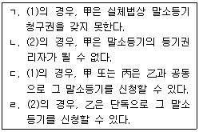
- ㄱ, ㄴ
- ㄱ, ㄹ
- ㄴ, ㄷ
- ㄴ, ㄹ
- ㄷ, ㄹ
(정답률: 알수없음)
63. 등기신청적격에 관한 설명으로 옳은 것은?
- 아파트 입주자대표회의의 명의로 그 대표자 또는 관리인이 등기를 신청할 수 없다.
- 국립대학교는 학교 명의로 등기를 신청할 수 없지만, 사립대학교는 학교 명의로 등기를 신청할 수 있다.
- 특별법에 의하여 설립된 농업협동조합의 부동산은 조합원의 합유로 등기하여야 한다.
- 지방자치단체도 등기신청의 당사자능력이 인정되므로 읍ㆍ면도 등기신청적격이 인정된다.
- 동(洞) 명의로 동민들이 법인 아닌 사단을 설립한 경우에는 그 대표자가 동 명의로 등기신청을 할 수 있다.
(정답률: 알수없음)
64. 판결에 의한 소유권이전등기신청에 관한 설명으로 옳은 것은?
- 판결에 의하여 소유권이전등기를 신청하는 경우, 그 판결주문에 등기원인일의 기재가 없으면 등기신청서에 판결송달일을 등기원인일로 기재하여야 한다.
- 소유권이전등기의 이행판결에 가집행이 붙은 경우, 판결이 확정되지 아니하여도 가집행선고에 의한 소유권이전등기를 신청할 수 있다.
- 판결에 의한 소유권이전등기 신청서에는 판결정본과 그 판결에 대한 송달증명서를 첨부하여야 한다.
- 공유물분할판결이 확정되면 그 소송의 피고도 단독으로 공유물분할을 원인으로 한 지분이전등기를 신청할 수 있다.
- 소유권이전등기절차 이행을 명하는 판결이 확정된 후 10년이 경과하면 그 판결에 의한 소유권이전등기를 신청할 수 없다.
(정답률: 알수없음)
65. 부동산관련 세목의 법정신고기한 또는 납기에 관한 설명으로 틀린 것은?
- 납세자가 국내에 주소를 둔 경우 부동산의 상속으로 인한 취득세의 법정신고기한은 상속개시일부터 6월 이내이다.
- 토지에 대한 재산세의 납기는 매년 9월 1일부터 9월 15일까지이다.
- 등록세의 법정신고기한은 등기 또는 등록을 하기 전까지이다.
- 건물에 대한 양도소득세의 과세표준확정신고기한은 양도소득이 있는 연도의 다음연도 5월 31일이다.
- 종합부동산세의 법정신고기한은 납세의무자가 신고납부방식을 택하는 경우 당해 연도 12월 15일이다.
(정답률: 알수없음)
66. 법정기일 전에 전세권 설정이 등기된 재산의 매각에 있어 그 전세권에 의하여 담보된 채권은 국세 또는 지방세에 우선한다. 다만, 그 재산에 대하여 부과된 국세 또는 지방세에는 우선하지 못한다. 그에 해당하는 세목은?
- 양도소득세
- 종합소득세
- 종합부동산세
- 취득세
- 등록세
(정답률: 알수없음)
67. 지방세법상 취득세에 있어서 그 사실상의 잔금지급일을 취득시기로 보는 경우로 틀린 것은?
- 화해조서에 의하여 취득가격이 입증되는 유상승계취득
- 외국으로부터의 수입에 의한 유상승계취득
- 법인이 작성한 법인장부인 원장에 의하여 취득가격이 입증되는 유상승계취득
- 공매방법에 의한 유상승계취득
- 국가ㆍ지방자치단체 및 지방자치단체조합으로부터의 유상승계취득
(정답률: 알수없음)
68. 지방세법상 취득세 납세의무에 관한 설명으로 틀린 것은?
- 부동산의 취득에 있어서는 관계법령에 의한 등기를 이행하지 아니한 경우라도 사실상 취득한 때에는 이를 취득한 것으로 본다.
- 법인설립시에 발행하는 주식을 취득함으로써 과점주주가 된 때에는 당해 법인의 부동산 등을 취득한 것으로 본다.
- 외국인 소유의 선박을 직접 사용할 목적으로 임차하여 수입하는 경우는 수입자가 이를 취득한 것으로 본다.
- 토지의 지목을 사실상 변경함으로써 그 가액이 증가한 경우는 이를 취득으로 본다.
- 주택법에 의한 주택조합이 조합원용으로 취득하는 조합주택용 부동산은 그 조합원이 취득한 것으로 본다.
(정답률: 알수없음)
69. 지방세법상 취득세가 비과세되는 경우로 틀린 것은?
- 종교 및 제사를 목적으로 하는 비영리단체가 그 사업에 사용하기 위한 부동산의 취득
- 마을주민의 복지증진을 도모하기 위하여 마을주민만으로 구성된 마을회 등 주민공동체의 주민공동소유를 위한 부동산의 취득
- 별정우체국법에 의하여 별정우체국사업에 사용하기 위한 부동산의 취득
- 영리법인이 임시흥행장, 공사현장사무소 등 존속기간이 1년을 초과하는 임시용건축물의 취득
- 정당법에 의하여 설립된 정당이 그 사업에 사용하기 위한 부동산의 취득
(정답률: 알수없음)
70. 지방세법상 등록세의 과세표준에 관한 설명으로 틀린 것은?(문제 오류로 인하여 실제 시험에서는 4, 5번이 정답 처리 되었습니다. 여기서는 4번을 누르면 정답 처리 됩니다.)
- 부동산에 관한 등록세의 과세표준은 등기 당시의 가액으로 한다.
- 신고가액이 시가표준액에 미달하는 경우에는 원칙적으로 시가표준액을 과세표준으로 한다.
- 공매방법에 의한 토지 취득의 경우에는 토지의 시가표준액을 과세표준으로 한다.
- 채권금액에 의하여 과세액을 정하는 경우 일정한 채권금액이 없을 때에는 채권의 목적이 된 것 또는 처분의 제한의 목적이 된 금액을 그 채권금액으로 본다.
- 감가상각의 사유로 변경된 가액을 과세표준으로 할 경우에는 등기ㆍ등록일 현재의 법인장부 또는 결산서에 의하여 입증되는 가액을 과세표준으로 한다.
(정답률: 0%)
71. 지방세법상 과세기준일 현재 재산세의 납세의무자가 아닌 자는?
- 재산세 과세대상인 재산을 지방자치단체와 연부로 매매계약을 체결하고 그 재산의 사용권을 무상으로 부여받은 경우에는 그 매수계약자
- 공유재산인 경우 그 지분에 해당하는 부분에 대하여는 그 지분권자
- 신탁법에 의하여 수탁자 명의로 등기ㆍ등록된 신탁재산의 경우에는 위탁자
- 주택의 사실상 소유자와 사용자가 다른 경우에는 그 사용자
- 도시 및 주거환경정비법에 의한 정비사업(주택재개발사업 및 도시환경정비사업에 한함)의 시행에 따른 환지계획에서 일정한 토지를 환지로 정하지 아니하고 체비지로 정한 경우에는 사업시행자
(정답률: 10%)
72. 지방세법상 재산세 과세대상에 속하는 것으로 옳게 묶인 것은?
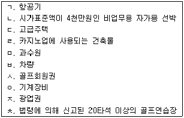
- ㄱ, ㄷ, ㄹ, ㅁ
- ㄴ, ㄹ, ㅈ, ㅊ
- ㄱ, ㄷ, ㅂ, ㅊ
- ㄴ, ㅂ, ㅅ, ㅇ
- ㅁ, ㅅ, ㅇ, ㅈ
(정답률: 알수없음)
73. 종합부동산세와 재산세에 관한 설명으로 틀린 것은?
- 주택외의 건축물에 대해서는 종합부동산세를 납부할 의무가 없다.
- 주택분 재산세의 납세의무자로서 주택분 과세기준금액을 초과하는 자는 종합부동산세 뿐만 아니라 재산세도 세대별로 합산하여 과세된다.
- 별장(법령상의 농어촌주택과 그 부속토지 제외)에 대한 재산세는 단일세율을 적용한다.
- 주택에 대한 재산세 및 종합부동산세는 부동산 가격공시 및 감정평가에 관한 법률에 의하여 공시된 가액을 기초로 과세표준을 산정함이 원칙이다.
- 국가ㆍ지방자치단체 및 지방자치단체조합이 1년 이상 무상으로 공공용에 사용하는 재산에 대하여는 재산세를 부과하지 아니한다.
(정답률: 알수없음)
74. 2008년도 주택(합산배제대상 주택 제외)분 종합부동산세 세액계산 흐름도를 나타낸 것이다. (ㄱ)～(ㅁ)에 들어갈 내용으로 옳게 묶인 것은?
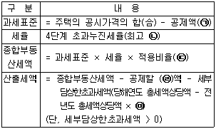
- 6억원, 1천분의 30, 100분의 65, 재산세, 300%
- 3억원, 1천분의 40, 100분의 65, 취득세, 150%
- 3억원, 1천분의 30, 100분의 65, 재산세, 300%
- 6억원, 1천분의 40, 100분의 90, 취득세, 150%
- 6억원, 1천분의 30, 100분의 90, 재산세, 300%
(정답률: 알수없음)
75. 양도소득세에 관한 설명으로 틀린 것은?
- 토지의 양도가액은 원칙적으로 양도당시의 양도자와 양수자간에 실제로 거래한 가액으로 한다.
- 소득세법상 甲이 특수관계가 없는 乙에게 무상으로 고가주택을 이전한 경우에는 양도소득세 과세대상이 아니다.
- 배우자 또는 직계존비속이 아닌 자간의 부담부증여에 있어서 수증자가 증여자의 채무를 인수하는 경우 그 채무액 상당부분은 양도소득세 과세대상이 아니다.
- 파산선고에 의한 처분으로 인하여 발생하는 소득은 양도소득세 비과세대상이다.
- 미등기 자산(법령이 정하는 자산은 제외)의 양도에 대해서는 양도소득기본공제가 적용되지 아니한다.
(정답률: 28%)
76. 양도소득세 세율 중 100분의 60이 적용되는 경우로 옳은 것은?
- 보유기간이 1년 미만인 전세권의 양도
- 보유기간이 1년 이상 2년 미만인 부동산을 취득할 수 있는 권리의 양도
- 법령의 규정에 의한 1세대 2주택에 해당하는 주택의 양도
- 미등기 자산(법령이 정하는 자산은 제외)의 양도
- 법령의 규정에 의한 비사업용토지의 양도
(정답률: 20%)
77. 양도소득세에 관한 설명으로 틀린 것은?
- 도시개발법의 규정에 따라 환지처분으로 지목이 변경되는 경우는 양도소득세 과세대상이 아니다.
- 채무자가 채무의 변제를 담보하기 위하여 자산을 양도하는 계약을 체결한 후 채무불이행으로 인하여 당해자산을 변제에 충당한 경우는 양도소득세 과세대상이다.
- 지상권의 양도는 양도소득세 과세대상이다.
- 국내거주자의 양도소득세 과세표준은 종합소득 및 퇴직소득의 과세표준과 구분하여 계산한다.
- 국내거주자가 토지와 주식을 양도하는 경우 각각 발생한 결손금은 양도소득금액 계산시 이를 통산한다.
(정답률: 19%)
78. 법령의 규정에 따라 경작상 필요에 의해 甲 소유의 A 농지(가액 10억원)를 乙 소유의 B농지(가액 Y원)와 교환하는 경우 양도소득세가 비과세되는 것은?(단, A농지가액은 B농지가액보다 크며, 교환에 의하여 새로이 취득하는 B농지를 3년 이상 농지소재지에 거주하면서 경작한다고 가정함)
- 2억원 < (10억원 - Y원) ≦ 2억 5천만원
- 2억 5천만원 < (10억원 - Y원) ≦ 3억원
- 3억원 < (10억원 - Y원) ≦ 3억 5천만원
- 3억 5천만원 < (10억원 - Y원) ≦ 4억원
- 4억원 < (10억원 - Y원)≦ 4억 5천만원
(정답률: 알수없음)
79. 소득세법상 아버지(거주자)가 국내소재 토지를 아들(거주자)에게 양도한다고 가정하는 경우 이에 관한 설명으로 틀린 것은?
- 토지에 대한 시가는 불특정다수인 사이에 자유로이 거래가 이루어지는 경우에 통상 성립된다고 인정되는 가액으로 한다.
- 아버지와 아들은 특수관계자에 해당된다.
- 양도소득세의 납세지는 원칙적으로 아버지의 국내 주소지이다.
- 토지의 시가를 10억원이라고 할 경우 이를 9억원에 양도하였다면 부당행위계산 부인의 규정이 적용되지 않는다.
- 만일 아버지가 아들에게 증여한 후, 아들이 이를 5년 이내에 특수관계가 없는 타인에게 다시 양도한 경우에는 아버지가 그 토지를 직접 타인에게 양도한 것으로 본다.
(정답률: 37%)
80. 양도소득세 신고ㆍ납부에 관한 내용으로 틀린 것은?
- 건물을 양도한 경우에는 그 양도일이 속하는 달의 말일부터 2월 이내에 납세지관할세무서장에게 예정신고를 하여야 한다.
- 양도소득세는 분납이 가능한 경우도 있다.
- 양도를 하였는데도 양도차익이 없는 경우에는 양도소득세 예정신고를 할 필요가 없다.
- 예정신고와 함께 자진납부를 하는 때에는 그 산출세액에서 납부할 세액의 100분의 10에 상당하는 금액을 공제한다.
- 복식부기의무자가 아닌 거주자가 매매계약서의 조작을 통하여 양도소득세 과세표준을 과소신고한 경우에는 과세표준 중 부당한 방법으로 과소신고한 과세표준에 상당하는 금액이 과세표준에서 차지하는 비율을 산출세액에 곱하여 계산한 금액의 100분의 40에 상당하는 금액을 납부할 세액에 가산한다.
(정답률: 알수없음)
3과목: 임의구분
81. 국토의 계획 및 이용에 관한 법령상 광역도시계획에 관한 설명으로 틀린 것은?
- 광역도시계획은 10년 단위로 수립하여야 한다.
- 도지사가 광역도시계획을 수립하는 때에는 국토해양부장관의 승인을 얻어야 한다.
- 광역계획권이 같은 도의 관할구역에 속한 경우에는 관할 도지사가 광역도시계획을 수립하여야 한다.
- 광역도시계획을 시ㆍ도지사가 공동으로 수립하는 경우 그 내용에 관해 서로 협의가 이루어지지 아니하는 때에는 공동 또는 단독으로 국토해양부장관에게 조정을 신청할 수 있다.
- 광역도시계획에 관한 기초조사로 인하여 손실을 받은 자가 있는 때에는 그 행위자가 속한 행정청이 그 손실을 보상하여야 한다.
(정답률: 알수없음)
82. 국토의 계획 및 이용에 관한 법령상 도시기본계획에 관한 설명으로 틀린 것은?
- 도시기본계획은 도시관리계획 수립의 지침이 된다.
- 도시기본계획의 수립기준 등은 대통령령이 정하는 바에 따라 시ㆍ도지사가 정한다.
- 시장 또는 군수가 도시기본계획을 수립하는 때에는 미리 당해 시 또는 군의 의회의 의견을 들어야 한다.
- 특별시장ㆍ광역시장이 도시기본계획을 수립 또는 변경하는 때에는 국토해양부장관의 승인을 얻어야 한다.
- 시장 또는 군수는 5년마다 관할구역의 도시기본계획에 대하여 그 타당성 여부를 전반적으로 재검토하여 이를 정비하여야 한다.
(정답률: 알수없음)
83. 국토의 계획 및 이용에 관한 법령상 도시관리계획의 수립 등에 관한 설명으로 틀린 것은?
- 도시관리계획의 입안권자는 국토해양부장관ㆍ특별시장ㆍ광역시장ㆍ도지사ㆍ시장 또는 군수(광역시의 군수는 제외)이다.
- 주민은 도시관리계획도서와 계획설명서를 첨부하여 기반시설의 설치에 관한 도시관리계획의 입안을 제안할 수 있다.
- 도시관리계획의 입안을 위한 절차로서 주민의 의견청취에 관하여 필요한 사항은 대통령령이 정하는 기준에 따라 당해 지방자치단체의 조례로 정한다.
- 시가화조정구역의 지정에 관한 도시관리계획결정 당시 이미 사업에 착수한 자는 당해 도시관리계획결정에 관계없이 그 사업을 계속할 수 있다.
- 도지사가 지구단위계획 중 건축물의 배치에 관한 계획을 결정하는 때에는 도에 두는 건축위원회와 도시계획위원회가 공동으로 하는 심의를 거쳐야 한다.
(정답률: 42%)
84. 국토의 계획 및 이용에 관한 법령상 용도지역에 관한 설명으로 틀린 것은?
- 도시지역ㆍ관리지역ㆍ농림지역 또는 자연환경보전지역으로 용도가 지정되지 아니한 지역에 대하여는 건폐율 규정을 적용함에 있어서 자연환경보전지역에 관한 규정을 적용한다.
- 관리지역이 세부용도지역으로 지정되지 아니한 경우 용적률에 대하여는 계획관리지역에 관한 규정을 적용한다.
- 관리지역 안에서「농지법」에 의한 농업진흥지역으로 지정ㆍ고시된 지역은 국토의 계획 및 이용에 관한 법률에 의한 농림지역으로 결정ㆍ고시된 것으로 본다.
- 공유수면의 매립목적이 당해 매립구역과 이웃하고 있는 용도지역의 내용과 다른 경우 그 매립구역이 속할 용도지역은 도시관리계획결정으로 지정하여야 한다.
- 「택지개발촉진법」에 의한 택지개발예정지구로 지정ㆍ고시된 지역은 국토의 계획 및 이용에 관한 법률에 의한 도시지역으로 결정ㆍ고시된 것으로 본다.
(정답률: 알수없음)
85. 국토의 계획 및 이용에 관한 법령상 개발행위허가를 요하는 것은?(단, 도시계획조례로 규정한 사항은 제외)
- 경작을 위한 토지의 형질변경
- 도시계획사업에 의한 개발행위
- 재해복구 또는 재난수습을 위한 응급조치
- 토지의 형질변경을 목적으로 하지 않는 토석의 채취
- 조성이 완료된 기존 대지에서의 건축물 그 밖의 공작물의 설치를 위한 토지의 굴착
(정답률: 30%)
86. 국토의 계획 및 이용에 관한 법령상 토지거래계약허가제에 관한 설명으로 옳은 것은?
- 자기의 거주용 주택용지로 이용하고자 토지거래계약허가를 신청하는 경우에도 이를 허가해서는 안된다.
- 도시관리계획 등 토지이용계획이 새로이 수립되는 지역은 토지의 투기적 거래나 지가의 급격한 상승이 우려되지 않아도 토지거래계약허가구역으로 지정할 수 있다.
- 국토해양부장관은 관계 시ㆍ도지사로부터의 허가구역 지정해제의 요청이 이유있다고 인정되면 허가구역을 해제할 수 있다.
- 허가구역안에서의 토지거래계약을 체결하고자 하는 당사자는 공동으로 시ㆍ도지사의 허가를 받아야 한다.
- 국토해양부장관은 토지거래계약허가구역을 지정하기 전에 중앙도시계획위원회의 심의를 거쳐야 한다.
(정답률: 알수없음)
87. 국토의 계획 및 이용에 관한 법령상 자연환경보전지역 안에서 건축할 수 있는 건축물은?(단, 도시계획조례로 규정한 사항은 제외)
- 교정 및 군사시설
- 의료시설
- 종교시설
- 묘지관련시설
- 교육연구시설 중 초등학교
(정답률: 알수없음)
88. 국토의 계획 및 이용에 관한 법령상 각 용도지역에 따른 건폐율과 용적률의 최대한도를 순서대로 바르게 연결한 것은?(단, 도시계획조례로 규정한 사항은 제외)
- 주거지역 : 60% - 500%
- 상업지역 : 90% - 1,200%
- 녹지지역 : 20% - 80%
- 계획관리지역 : 40% - 100%
- 자연환경보전지역 : 20% - 60%
(정답률: 알수없음)
89. K시에 소재하고 있는 甲의 대지는 제2종일반주거지역과 생산녹지지역에 걸쳐 있으면서, 그 총면적은 1,000m2이다. 이 경우 제2종일반주거지역의 건축 가능한 최대연면적이 1,200m2일 때, 甲의 대지 위에 건축할 수 있는 건물의 최대연면적은?(단, K시의 도시계획조례상 생산녹지지역의 용적률은 50%, 제2종일반주거지역의 용적률은 200%, 기타 건축제한은 고려하지 아니함)
- 1,200m2
- 1,400m2
- 1,500m2
- 1,600m2
- 1,800m2
(정답률: 알수없음)
90. 국토의 계획 및 이용에 관한 법령상 용도구역의 지정에 관한 설명으로 틀린 것은?
- 국토해양부장관은 개발제한구역의 지정을 도시관리계획으로 결정할 수 있다.
- 국토해양부장관은 도시자연공원구역의 지정을 도시관리계획으로 결정할 수 있다.
- 도시자연공원구역의 지정에 관하여 필요한 사항은 따로 법률로 정한다.
- 국토해양부장관은 직접 또는 관계 행정기관의 장의 요청을 받아 시가화조정구역의 지정을 도시관리계획으로 결정할 수 있다.
- 농림수산식품부장관은 직접 또는 관계 행정기관의 장의 요청을 받아 수산자원보호구역의 지정을 도시관리계획으로 결정할 수 있다.
(정답률: 알수없음)
91. 국토의 계획 및 이용에 관한 법령에 의하면, 토지거래계약허가를 받은 자가 허가받은 목적에 따른 토지이용의무를 이행하지 아니하고 방치한 경우에는 연 1회씩 이행강제금을 부과한다. 이 경우 매년 신규로 부과하는 이행강제금의 토지취득가액에 대한 비율은?
- 100분의 5
- 100분의 7
- 100분의 10
- 100분의 12
- 100분의 15
(정답률: 알수없음)
92. 국토의 계획 및 이용에 관한 법령상 과태료부과 대상에 해당되지 않는 것은?
- 공동구에 수용하여야 하는 시설을 공동구에 수용하지 아니한 경우
- 정당한 사유 없이 광역도시계획에 관한 기초조사를 방해한 경우
- 도시계획시설사업의 시행자가 감독상 필요한 보고를 허위로 한 경우
- 개발행위허가를 받은 자가 소속공무원의 그 개발행위에 관한 업무상황의 검사를 거부한 경우
- 공동구의 설치비용을 부담하지 아니한 자가 허가를 받지 않고 공동구를 사용하는 경우
(정답률: 알수없음)
93. 도시개발법령상 개발계획의 수립 등에 관한 설명으로 틀린 것은?
- 자연녹지지역에 도시개발구역을 지정할 때에는 도시개발구역을 지정한 후에 개발계획을 수립할 수 있다.
- 지정권자는 직접 개발계획을 변경할 수는 없고, 관계 중앙행정기관의 장이나 시장ㆍ군수ㆍ구청장 또는 사업시행자의 요청을 받아 이를 변경할 수 있다.
- 시행자가 국가나 지방자치단체인 때에는 지정권자는 토지소유자의 동의를 받지 않고 환지방식의 도시개발사업 시행을 위한 개발계획을 수립할 수 있다.
- 문화재보호계획을 변경하는 개발계획의 변경에는 환지방식의 개발계획 수립에 관한 토지소유자의 동의요건이 적용되지 않는다.
- 보건의료시설 및 복지시설의 설치계획도 개발계획에 포함되어야 한다.
(정답률: 40%)
94. 도시개발법령상 도시개발사업의 실시계획에 관한 설명으로 틀린 것은?
- 실시계획은 개발계획에 맞게 작성되어야 하고, 지구단위계획이 포함되어야 한다.
- 실시계획 인가신청서를 제출하는 때에는 계획평면도 및 개략설계도도 함께 첨부하여야 한다.
- 실시계획을 고시한 경우 그 고시된 내용 중 「국토의 계획 및 이용에 관한 법률」에 따라 도시관리계획으로 결정되어야 하는 사항은 같은 법에 따른 도시관리계획이 결정ㆍ 고시된 것으로 본다.
- 지정권자가 실시계획을 작성 또는 인가할 때 그 내용에 인ㆍ허가등의 의제사항이 있으면 미리 관계 행정기관의 장과 협의하여야 한다.
- 위 ④의 경우 관계 행정기관의 장은 협의 요청을 받은 날부터 60일 이내에 의견을 제출하여야 한다.
(정답률: 10%)
95. 도시개발법령상 환지계획에 관한 설명으로 틀린 것은?
- 필지별로 된 환지명세는 환지계획에 포함되어야 한다.
- 환지계획 작성에 따른 환지계획의 기준 등에 관하여 필요한 사항은 시행자가 정한다.
- 토지평가협의회의 구성 및 운영 등에 필요한 사항은 해당 규약ㆍ정관 또는 시행규정으로 정한다.
- 행정청이 아닌 시행자가 환지계획을 작성한 경우에는 특별자치도지사ㆍ시장ㆍ군수 또는 자치구청장의 인가를 받아야 한다.
- 시행자는 환지방식이 적용되는 도시개발구역에 있는 조성토지등의 가격을 평가할 때에는 감정평가업자의 평가를 거친 후 토지평가협의회의 심의를 거쳐 결정한다.
(정답률: 알수없음)
96. 도시개발법령상 환지처분에 관한 설명으로 틀린 것은?
- 시행자는 환지방식의 도시개발사업 공사를 끝낸 때에는 지체없이 공사완료 공고를 관보 또는 공보에 하여야 한다.
- 공사완료 공고를 한 때에는 공사설계서ㆍ관련도면 등을 14일 이상 일반에게 공람시켜야 한다.
- 지정권자인 시행자는 국토해양부장관의 준공검사를 받은 후 60일 이내에 환지처분을 하여야 한다.
- 환지처분의 공고에는 사업비의 정산내역도 포함되어야 한다.
- 환지계획에서 정해진 환지는 그 환지처분의 공고가 있은 날의 다음 날부터 종전의 토지로 본다.
(정답률: 알수없음)
97. 도시개발법령상 체비지에 관한 설명으로 틀린 것은?
- 시행자는 도시개발사업에 필요한 경비 충당을 위해 보류지 중 일부를 체비지로 정할 수 있다.
- 시행자는 도시개발사업에 드는 비용을 충당하기 위해 체비지 용도로 지정된 환지예정지를 사용ㆍ수익하게 하거나 처분할 수 있다.
- 이미 처분된 체비지는 그 체비지를 매입한 자가 소유권 이전등기를 마친 때에 소유권을 취득한다.
- 지정권자는 도시개발사업의 조성토지등(체비지는 제외)이 그 사용으로 인하여 사업시행에 지장이 없는 경우에는 준공 전에 사용허가를 할 수 있다.
- 시행자는 준공 전에는 지정권자의 사용허가를 받지 아니하고는 조성토지인 체비지를 사용할 수 없다.
(정답률: 알수없음)
98. 도시개발법령상 도시개발사업에 필요한 비용에 관한 설명으로 틀린 것은?
- 원칙적으로 시행자가 부담한다.
- 이익을 받는 다른 지방자치단체가 비용의 일부를 부담할 수도 있다.
- 이익을 받는 다른 공공시설관리자가 비용의 일부를 부담할 수도 있다.
- 전부환지방식으로 도시개발사업을 시행하는 경우에는 전기시설공급자와 지중선로설치요청자가 각각 2분의 1의 비율로 부담한다.
- 시행자가 행정청인 경우에는 그 비용의 전부를 국고에서 보조하거나 융자할 수 있다.
(정답률: 알수없음)
99. 도시 및 주거환경정비법령상 다음 ( )에 들어갈 내용으로 옳은 것은?(순서대로 (ㄱ), (ㄴ), (ㄷ))
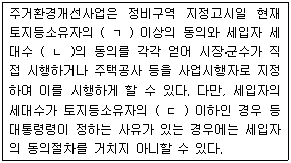
- 2분의 1 - 과반수 - 2분의 1
- 2분의 1 - 3분의 2 - 3분의 1
- 3분의 2 - 과반수 - 3분의 1
- 3분의 2 - 과반수 - 2분의 1
- 3분의 2 - 3분의 2 - 3분의 1
(정답률: 알수없음)
100. 도시 및 주거환경정비법령상 정비사업전문관리업자에 대한 필요적 등록취소사유는?
- 등록기준에 미달하게 된 때
- 다른 사람에게 자기의 성명을 사용하여 도시 및 주거환경정비법이 정한 업무를 수행하게 한 때
- 국토해양부장관에게 업무감독상의 보고를 허위로 한 때
- 고의 또는 과실로 조합에게 계약금액의 3분의 1 이상의 재산상 손실을 끼친 때
- 최근 3년간 2회 이상의 업무정지처분을 받은 자로서 그 정지처분을 받은 기간이 합산하여 6월을 초과한 때
(정답률: 알수없음)
101. 도시 및 주거환경정비법령상 도시ㆍ주거환경정비기본계획(이하 ‘기본계획’이라 함)에 관한 설명으로 옳은 것은?
- 기본계획은 20년 단위로 수립하여야 한다.
- 산업의 유치업종 및 배치계획은 기본계획에 포함되어야 한다.
- 기본계획의 작성기준 및 작성방법은 특별시장ㆍ광역시장 또는 시장이 이를 정한다.
- 시장은 기본계획을 수립하거나 변경한 때에는 국토해양부령이 정하는 방법 및 절차에 따라 국토해양부장관에게 보고하여야 한다.
- 시장은 기본계획에 대하여 10년마다 그 타당성 여부를 검토하여 그 결과를 기본계획에 반영하여야 한다.
(정답률: 알수없음)
102. 도시 및 주거환경정비법령상 정비사업시행을 위한 조치 등에 관한 설명으로 틀린 것은?
- 사업시행자는 주거환경개선사업의 시행으로 철거되는 주택의 소유자에 대하여 당해 정비구역 내ㆍ외에 소재한 임대주택 등의 시설에 임시로 거주하게 하거나 주택자금의 융자알선 등 임시수용에 상응하는 조치를 하여야 한다.
- 국가가 사업시행자로부터 위 ①의 임시수용시설에 필요한 건축물의 사용신청을 받았음에도 이미 그 건축물의 매매계약이 제3자와 체결되어 있는 때에는 그 사용신청을 거절할 수 있다.
- 주거환경개선사업에 따른 건축허가를 받는 때에는「주택법」상의 국민주택채권 매입에 관한 규정이 적용된다.
- 정비사업의 시행으로 인하여 전세권의 설정목적을 달성할 수 없는 때에는 그 권리자는 계약을 해지할 수 있다.
- 주택재건축사업을 시행함에 있어 조합 설립 인가일 현재 조합원 전체의 공동소유인 토지에 대하여는 조합 소유의 토지로 본다.
(정답률: 알수없음)
103. 도시 및 주거환경정비법령상 정비사업의 준공인가에 관한 설명으로 틀린 것은?
- 대한주택공사인 사업시행자가 다른 법률에 의하여 자체적으로 준공인가를 처리한 경우에는 준공인가를 받은 것으로 본다.
- 대한주택공사인 사업시행자는 다른 법률에 의하여 자체적으로 처리한 준공인가결과를 시장ㆍ군수에게 통보한 때에는 그 사실을 분양대상자에게 지체없이 통지하여야 한다.
- 준공인가신청을 받은 시장ㆍ군수는 지체없이 준공검사를 실시하여야 한다.
- 시장ㆍ군수는 효율적인 준공검사를 위하여 필요한 때에는 건축위원회의 심의를 거쳐 관계행정기관ㆍ정부투자기관ㆍ연구기관 등에 준공검사의 실시를 의뢰해야 한다.
- 사업시행자가 아닌 시장ㆍ군수는 준공인가전이라도 완공된 건축물이 사용에 지장이 없는 경우에는 입주예정자가 그 건축물을 사용할 것을 사업시행자에 대하여 허가할 수 있다.
(정답률: 알수없음)
104. 도시 및 주거환경정비법령상 주택재건축사업에서의 건축물 안전진단에 관한 설명으로 옳은 것은?
- 주택재건축사업을 위한 안전진단은 단독주택도 그 대상으로 한다.
- 안전진단의 신청에는 토지등소유자의 동의를 요하지 않는다.
- 안전진단을 신청한 자는 안전진단의 실시가 결정된 때에는 안전진단에 필요한 비용을 시ㆍ도지사에게 예치하여야 한다.
- 시ㆍ도지사는 안전진단의 신청이 있는 때에는 신청일로부터 20일 이내에 안전진단의 실시여부를 결정하여 당해 신청인에게 통보하여야 한다.
- 주택의 구조안전상 사용금지가 필요하다고 시ㆍ도지사가 인정하는 건축물은 안전진단에서 제외된다.
(정답률: 20%)
1⑤. 주택법령상 주택건설사업의 등록을 할 수 없는 자는?
- 한정치산의 선고가 취소된 후 2년이 경과되지 아니한 자
- 파산선고를 받은 자로서 복권된 후 2년이 경과되지 아니한 자
- 주택법을 위반하여 자격정지 이상의 형의 선고를 받고 그 집행이 면제된 날부터 2년이 경과된 자
- 주택법을 위반하여 금고 이상의 형의 집행유예선고를 받고 그 유예기간이 종료된 자
- 거짓으로 주택건설사업을 등록하여 그 등록이 말소된 후 2년이 경과되지 아니한 자
(정답률: 17%)
106. 주택법령상 주택정책심의위원회에 관한 설명으로 옳은 것은?
- 위원장 1인 외에 20인 이내의 위원으로 구성한다.
- 위원장이 부득이한 사유로 직무를 수행할 수 없는 때에는 위원회의 의결로 직무대행자를 정한다.
- 간사는 국토해양부의 3급 공무원 중에서 위원회의 의결을 거쳐 국토해양부장관이 지명한다.
- 긴급을 요하는 경우를 제외하고, 위원장이 위원회를 소집하고자 하는 경우에는 회의 개최 3일 전까지 회의일시ㆍ장소 및 심의안건을 각 위원에게 통지해야 한다.
- 회의는 위원 과반수의 출석으로 개의하고, 출석위원 3분의 2 이상의 찬성으로 의결한다.
(정답률: 알수없음)
107. 주택법령상 국민주택기금에 관한 설명으로 옳은 것은?
- 한국토지공사는 국토해양부장관의 승인을 받아 국민주택기금에 자금을 예탁하여야 한다.
- 국토해양부장관은 국민주택기금의 운용에 관한 계획을 작성할 때 기획재정부장관의 승인을 받아야 한다.
- 기금수탁자는 채무자의 무자력으로 인해 국민주택기금의 대출금 회수가 불가능한 경우 국토해양부령이 정하는 바에 의해 대출채권을 상각할 수 있다.
- 국토해양부장관은 국민주택기금의 결산에서 이익이 생긴 때에는 이익금의 2분의 1 이상을 국민주택기금에 적립하여야 한다.
- 매 사업연도에 국민주택기금의 결산에서 손실금이 생긴 때에는 정부가 일반회계에서 이를 우선 보전한다.
(정답률: 알수없음)
108. 주택법령상 사업주체는 사업의 대상이 된 주택 및 대지에 대하여는 ‘일정 기간’ 동안 입주예정자의 동의없이 저당권 설정 등을 할 수 없는바, 이에 관한 설명으로 옳은 것은?
- ‘일정 기간’이란, 입주자모집공고승인 신청일 이후부터 입주예정자가 소유권이전등기를 신청할 수 있는 날 이후 90일까지의 기간을 말한다.
- 위 ①에서 ‘소유권이전등기를 신청할 수 있는 날’이란 사업주체가 입주예정자에게 통보한 잔금지급일을 말한다.
- 사업주체가 저당권 설정제한의 부기등기를 하는 경우, 주택건설대지에 대하여는 입주자모집공고승인 신청과 동시에, 건설된 주택에 대하여는 소유권보존등기와 동시에 하여야 한다.
- 대한주택보증주식회사의 신탁의 인수에 관하여는 「자본시장과 금융투자업에 관한 법률」을 적용한다.
- 대한주택보증주식회사가 분양보증을 하면서 주택건설대지를 자신에게 신탁하게 할 경우 사업주체는 이를 신탁해야 한다.
(정답률: 알수없음)
109. 주택법령상 주택건설사업의 등록사업자에 관한 설명으로 옳은 것은?
- 사업주체가 한국토지공사인 경우에는 등록할 필요가 없다.
- 「임대주택법」에 따른 특수목적법인의 경우 사업자 등록기준 중 인적기준을 강화하여 적용할 수 있다.
- 토지소유자가 등록사업자와 공동으로 주택건설사업을 시행하는 경우 토지소유자와 등록사업자는 공동사업주체로 추정된다.
- 리모델링주택조합이 그 구성원의 주택을 건설하는 경우 등록사업자와 공동으로 사업을 시행해야 한다.
- 판례에 의하면 ‘주택건설공사를 도급받아 시공하고자 하는 자’는 주택건설사업을 시행하고자 하는 자에 해당하므로 등록의무가 있다.
(정답률: 알수없음)
110. 주택법령상 주택조합에 관한 설명으로 옳은 것은?
- 국민주택을 공급받기 위하여 직장주택조합을 설립하는 경우 관할 시장ㆍ군수ㆍ구청장의 인가를 받아야 한다.
- 주택조합과 등록사업자가 공동으로 사업을 시행ㆍ시공할 경우 등록사업자는 자신의 귀책사유로 사업추진이 지연됨으로 인해 조합원에게 발생한 손해를 배상해야 한다.
- 리모델링주택조합은 그 구성원을 위하여 건설하는 주택을 조합원에게 우선 공급해야 하고, 직장주택조합에 대하여는 사업주체가 국민주택을 조합원에게 우선 공급해야 한다.
- 투기과열지구 안에서 관할 시장의 설립인가를 받은 지역주택조합이 구성원을 선정하는 경우에는, 신청서의 접수순서에 따라 조합원 지위를 인정한다.
- 시장ㆍ군수ㆍ구청장은 주택조합이 주택법에 의한 명령이나 처분에 위반한 때에는 그 설립인가를 취소해야 한다.
(정답률: 알수없음)
111. 주택법령상 주택상환사채에 관한 설명으로 옳은 것은?
- 등록사업자는 자본금 등이 대통령령이 정하는 기준에 부합하고 금융기관 또는 대한주택보증주식회사의 보증을 받은 때에 한하여 이를 발행할 수 있다.
- 주택상환사채를 발행하려는 자는 주택상환사채발행계획을 작성하여 기획재정부장관의 승인을 얻어야 한다.
- 주택상환사채는 기명증권으로 하고, 사채권자의 명의변경은 취득자의 성명을 채권에 기재하는 방법으로 한다.
- 등록사업자의 등록이 말소된 경우 그가 발행한 주택상환사채는 효력을 상실한다.
- 주택상환사채의 발행에 관하여는 주택법보다「상법」중 사채발행에 관한 규정을 우선 적용한다.
(정답률: 알수없음)
112. 건축법령상 제1종근린생활시설에 해당되는 시설은?(단, 동일한 건축물 안에서 당해 용도에 쓰이는 바닥면적의 합계는 400㎡임)
- 테니스장
- 부동산중개업소
- 골프연습장
- 일반음식점
- 수퍼마켓
(정답률: 28%)
113. 건축법령상 건축허가 등에 관한 설명으로 틀린 것은?
- 21층 이상의 건축물 등 대통령령으로 정하는 용도 및 규모의 건축물을 광역시에 건축하려면 광역시장의 허가를 받아야 한다.
- 시장ㆍ군수는 21층 이상의 건축물의 건축을 허가하려면 미리 건축계획서와 기본설계도서를 첨부하여 도지사의 승인을 받아야 한다.
- 건축허가나 건축물의 착공을 제한하는 경우 제한기간은 2년 이내로 하며, 2회에 한하여 1년 이내의 범위에서 제한기간을 연장할 수 있다.
- 허가를 받으려는 자는 허가신청서에 국토해양부령으로 정하는 설계도서를 첨부하여 허가권자에게 제출하여야 한다.
- 허가권자는 허가를 받은 자가 허가를 받은 날부터 1년 이내에 공사에 착수하였으나 공사의 완료가 불가능하다고 인정되는 경우에는 허가를 취소하여야 한다.
(정답률: 19%)
114. 건축법령상 지역 및 지구 안에서의 건축제한 등에 관한 설명으로 옳은 것은?(단, 조례로 규정한 사항은 제외)
- 건축물이 미관지구에 걸치는 경우에는 그 건축물과 대지의 전부에 대하여 미관지구 안의 건축물과 대지 등에 관한 건축법의 규정을 적용한다.
- 시장은 건축물의 용도 및 형태에 관계없이 동일한 가로구역(도로로 둘러싸인 일단의 지역) 안에서는 건축물의 높이를 동일하게 정해야 한다.
- 최고 높이가 정하여지지 아니한 가로구역의 경우 건축물의 각 부분의 높이는 그 부분으로부터 전면도로의 반대쪽 경계선까지의 수평거리의 2배를 넘을 수 없다.
- 3층 이하로서 높이가 12미터 이하인 건축물에는 일조 등의 확보를 위한 건축물의 높이제한에 관한 규정을 적용하지 아니할 수 있다.
- 정북방향으로 도로 등 건축이 금지된 공지에 접하는 대지인 경우 건축물의 높이를 정북방향의 인접 대지경계선으로부터의 거리에 따라 대통령령으로 정하는 높이 이하로 해야 한다.
(정답률: 14%)
115. 건축법령상 특별건축구역에 관한 설명으로 옳은 것은?
- 「도시 및 주거환경정비법」에 따른 정비구역에는 특별건축구역을 지정할 수 없다.
- 「개발제한구역의 지정 및 관리에 관한 특별조치법」에 따른 개발제한구역에는 특별건축구역을 지정할 수 있다.
- 특별건축구역 지정신청이 접수된 경우 시ㆍ도지사는 지정신청을 받은 날부터 15일 이내에 시ㆍ도건축위원회의 심의를 거쳐야 한다.
- 특별건축구역에서는 「문화예술진흥법」에 따른 건축물에 대한 미술장식 관련 규정을 개별 건축물마다 적용하지 아니하고 특별건축구역 전부 또는 일부를 대상으로 통합하여 적용할 수 있다.
- 특별건축구역을 지정하는 경우「국토의 계획 및 이용에 관한 법률」에 따른 용도지역의 지정이 있는 것으로 본다.
(정답률: 40%)
116. 건축법령상 1년에 1회 이상 정기점검을 실시하여 건축물ㆍ대지 및 건축설비가 건축법령의 각 규정에 적합하도록 유지ㆍ관리하여야 하는 자는?
- 국토해양부장관
- 시ㆍ도지사
- 시장ㆍ군수ㆍ구청장
- 건축지도원
- 건축물의 소유자 또는 관리자
(정답률: 알수없음)
117. 건축법령상 건축물을 건축하거나 대수선하는 경우에는 국토해양부령이 정하는 구조기준 및 구조계산에 따라 그 구조의 안전을 확인하여야 하는바, 이에 해당하지 않는 건축물은?
- 층수가 5층인 건축물
- 처마높이가 12m인 건축물
- 높이가 15m인 건축물
- 연면적이 1,500㎡인 건축물
- 기둥과 기둥사이의 거리가 8m인 건축물
(정답률: 알수없음)
118. 건축법령상 건축통계 및 건축행정 전산화에 관한 설명으로 틀린 것은?
- 건축통계의 작성 등에 필요한 사항은 국토해양부령으로 정한다.
- 허가권자는 건축통계를 국토해양부장관이나 시ㆍ도지사에게 보고하여야 한다.
- 허가권자는 전국단위의 전산자료를 국토해양부장관의 승인을 받아 그것을 이용하려는 자에게 무상으로 제공해야 한다.
- 국토해양부장관은 건축법령에 따른 건축행정 관련 업무를 전산처리하기 위하여 종합적인 계획을 수립ㆍ시행할 수 있다.
- 허가권자는 건축허가 업무 등의 효율적인 처리를 위하여 전자정보처리 시스템을 이용하여 건축법에 규정된 업무를 처리할 수 있다.
(정답률: 9%)
119. 농지법령상 농지취득자격증명에 관한 설명으로 틀린 것은?
- 국가나 지방자치단체가 농지를 소유하는 경우는 농지취득자격증명을 발급받지 않아도 된다.
- 농지소유상한을 위반하여 농지를 소유할 목적으로 부정한 방법에 의해 농지취득자격증명을 발급받은 자는 3년 이하의 징역 또는 1천만원 이하의 벌금에 처한다.
- 농업법인의 합병으로 농지를 취득하는 경우 농지취득자격증명을 발급받지 않아도 된다.
- 상속으로 농지를 취득하여 소유하는 경우 농지취득자격증명을 발급받지 않아도 된다.
- 농지소재지를 관할하는 시장ㆍ군수ㆍ구청장은 농지취득자격증명을 발급할 수 있다.
(정답률: 알수없음)
120. 농지법령상 농지소유상한에 관한 설명으로 틀린 것은?
- 지방자치단체가 농지를 임대할 목적으로 소유하는 경우에는 총 1만㎡ 까지 소유할 수 있다.
- 8년 이상 농업경영을 한 후 이농한 자는 이농 당시 소유 농지 중에서 총 1만㎡ 까지만 소유할 수 있다.
- 상속으로 농지를 취득한 자로서 농업경영을 하지 아니하는 자는 그 상속농지 중에서 총 1만㎡ 까지만 소유할 수 있다.
- 농지 소유에 관하여는 농지법에 정한 경우 외에는 특례를 정할 수 없다.
- 농림수산식품부장관은 농지소유상한을 위반하여 농지를 소유할 목적으로 거짓으로 농지취득자격증명을 발급받은 자를 주무관청에 신고하는 자에게 포상금을 지급할 수 있다.
(정답률: 17%)
중개행위인지의 여부는 중개업자가 진정으로 거래당사자를 위하여 거래를 알선ㆍ중개하려는 의사를 갖고 있었는가를 기준으로 판단합니다. 이는 판례에서도 확인할 수 있습니다.